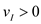
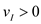

Refer to Figure P17.43 in the text book for the logarithmic amplifier circuit.
Consider that the op-amp is ideal. So, the current passing through it is zero.
The total input current flows through the feedback path (through diode) only .
The output voltage is the negative of the voltage across the diode .
By the virtual ground concept, as the non-inverting terminal connected to ground, the voltage across inverting terminal is also zero.
Therefore, the current passing through resistor  for  is,
for  is,

The current passing through diode is,

 is the saturation current
is the saturation current is thermal voltage
is thermal voltage is diode drop in the forward condition.
is diode drop in the forward condition. .
.
 .
.